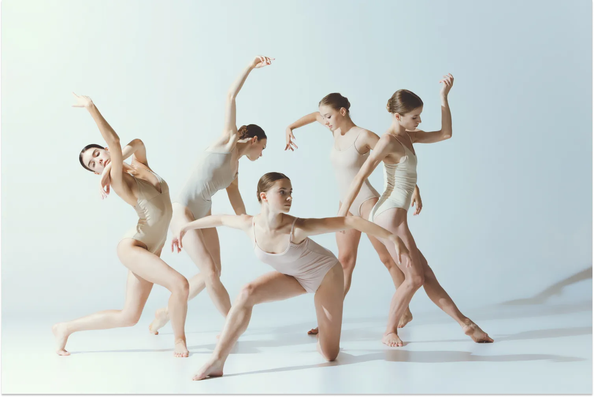

What is Contemporary Dance?
Contemporary dance can be described as a style that blends elements from various dance forms, particularly classical ballet, while freeing itself from ballet’s strict rules and structure. Unlike classical ballet, it allows for greater freedom of movement and encourages more natural and expressive body language. A strong technical foundation is important to perform modern and contemporary dance at a high level. Dancers must be adaptable, physically controlled, and capable of improvisation, as creativity plays a key role in this style. This form of dance explores body weight, gravity, and dynamic variation, often using the floor as part of the movement. It is typically performed barefoot, allowing dancers to connect more directly with the ground and move with greater flexibility and control. |
 |
What is Body Expression in Contemporary Dance?
In contemporary dance, emotions are conveyed through movement and physical expression. It is an artistic form that uses the body as the main instrument to communicate feelings and ideas, allowing dancers to interpret and express emotions through their motions. To deepen movement exploration and strengthen each performer’s emotional sensitivity, workshops and regular training sessions are organized. These practices help dancers refine their body expression, which is highly valued in contemporary dance.
What are the Characteristics of Contemporary Dance?
A defining feature of contemporary dance is its break from the strict rules of classical ballet, focusing instead on conveying a story and expressing emotion through free, dynamic movement. To master this, dancers typically train in schools or academies specializing in contemporary or modern dance.
Another key aspect of this style is that the dancer often takes on the role of their own choreographer, shaping their stage presence, body language, and movements. Contemporary dance also draws inspiration from cultural dances worldwide, and performances can incorporate visual and multimedia elements to create a richer, more engaging experience for the audience.
Contemporary Dance Techniques
Mastering contemporary dance requires more than passion—it demands a solid understanding of its techniques. Whether your goal is to become a professional dancer or simply to perform with confidence, learning the fundamentals is essential. Contemporary dance training is available in specialized schools and academies, which offer programs for all levels, from beginners to advanced dancers. Classes are often tailored for different age groups, including children, teens, adults, and even acting students who want to incorporate movement into their performance skills.
Contemporary dance draws on a variety of techniques, each offering unique approaches to movement, expression, and body control. Some of the most influential techniques include:
- Cunningham Technique: Developed by Merce Cunningham, this technique emphasizes clarity of movement, precision, and the use of space. It encourages dancers to explore motion independently of music, focusing on the body’s relationship to gravity and the environment.
- Graham Technique: Created by Martha Graham, this method prioritizes contraction and release, emphasizing emotional expression through movement. It is known for its dramatic intensity and the use of the torso to convey deep emotions.
- Limon Technique: Developed by José Limón, this technique focuses on the natural dynamics of fall and recovery, exploring weight, breath, and flow. It emphasizes expressive movement and musicality, allowing dancers to communicate through the rhythm of their bodies.
Learning these techniques not only improves strength, flexibility, and coordination but also enhances the dancer’s ability to interpret and express emotion through movement. Contemporary dance encourages individuality, creativity, and exploration, making technical training a gateway to personal expression on stage.
Many schools also integrate workshops, improvisation sessions, and performance opportunities, giving students a chance to apply their skills in real-world settings. By combining technique with creativity, contemporary dancers develop a unique stage presence and the ability to connect deeply with audiences. If you want, I can also create a visually appealing
Learn from Dancing Videos
|
|
Learn from experienced teachers
Explore in depth and learn from experienced teachers & Book a class to experience the beauty of these dances.